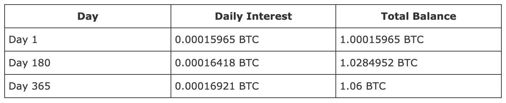

> Cuenta de intereses
Cuenta de intereses
¿Qué es la cuenta de intereses?
¿Cómo funciona la cuenta de intereses?
Nos complace ofrecer la función de cuenta de interés a los usuarios elegibles de Blockchain.com Wallet. La Cuenta de Intereses es una instalación de almacenamiento de criptografía que genera intereses dentro de su Billetera que gana intereses sobre la cantidad que transfiere y almacena en ella.
Cualquier fondo que transfiera a la Cuenta de Intereses comenzará a generar intereses a una tasa de interés compuesta . Cuando haya terminado de almacenar su criptografía en la Cuenta de intereses, puede retirarla junto con cualquier interés ganado durante ese tiempo a su saldo de Wallet no custodiado.
Podemos ofrecer una tasa de interés competitiva a los usuarios que transfieren y mantienen cripto con nosotros. Hacemos esto al prestar criptodepósitos a prestatarios institucionales y / o sofisticados seleccionados, rigurosamente examinados que han establecido un historial a una tasa ligeramente más alta. Esta tasa comprende una porción mayor, que se le devuelve como interés, y una cantidad menor que cubre nuestros costos operativos y nos permite mejorar nuestros productos para nuestros usuarios.
Intereses 101
Su cuenta de interés de custodia le permite ganar intereses sobre los fondos que mantiene en su billetera. Todo lo que necesita hacer es transferir cripto desde su billetera sin custodia a su Cuenta de Intereses y dejarla allí, ¡y nosotros haremos el resto!
Cómo funciona?
El interés se calcula y capitaliza diariamente y se paga mensualmente (el día 1 de cada mes). Todos los montos están denominados en criptografía (por ejemplo, denominados en BTC si depositó bitcoins), incluidas las transferencias a la cuenta, los retiros y los cálculos y pagos de intereses.
Cuando realice una transferencia a su Cuenta de Intereses, se le mostrará la tasa de interés correspondiente. Esta es una tasa de interés anualizada: es la cantidad de interés que ganaría si mantuviera sus fondos en la Cuenta de intereses durante un año. Supongamos que transfiere 1 BTC a su cuenta de intereses con una tasa de interés del 6% *. Recibiría pagos de intereses mensualmente y, al final del año, suponiendo que no haya más transferencias o retiros y que no haya cambios en la tasa, tendría 1.06 BTC en su Cuenta de Intereses.
Usamos la siguiente fórmula para calcular el interés diario:
Interés diario = (capital + monto de interés acumulado hasta el momento) ((1+ tasa de interés anualizada) ^ (1/365) -1)
Digamos que transfiere 1 BTC a su cuenta de intereses. El primer día, el interés se calcularía de la siguiente manera:
Interés diario = (1 BTC + 0 BTC) ((1 + 0.06) ^ (1/365) - 1) = 0.00015965358 BTC
Si continúa reteniendo el capital y los intereses devengados en su Cuenta de Intereses, los pagos de intereses diarios aumentarán con el tiempo, porque los intereses pagados anteriormente también se contabilizarán como parte de su saldo cuando devengue intereses futuros. Esto lo podemos ver en el siguiente cuadro que muestra los pagos de intereses estimados después de 1 día, 180 días y 365 días, a partir de una transferencia inicial de 1 BTC, con una tasa de interés anual del 6%.
Tenga en cuenta que, debido a las condiciones del mercado, la tasa de interés puede subir o bajar mientras sus fondos están en la cuenta. Le informaremos del cambio por correo electrónico y siempre puede verificar la tasa de interés actual de su cuenta en los detalles de la cuenta (accesible en la pestaña Ganar intereses de su billetera) y retirar o transferir más en cualquier momento.
* Nuestra tasa de interés actual para bitcoin es del 6% APY. Esto puede estar sujeto a cambios.
¿Mi cuenta de intereses está respaldada?
Su Cuenta de Intereses tiene custodia (a diferencia de los fondos que almacena en la Billetera Blockchain.com estándar, que no tiene custodia ). Esto significa que no está respaldado por la frase de respaldo de su billetera . Su cuenta de interés está asociada con su perfil de identidad de Blockchain.com. Si pierde el acceso a su billetera Blockchain.com, todo lo que necesita hacer es usar su frase de respaldo para recuperar su billetera y luego volver a verificar su nueva billetera para recuperar los fondos de su cuenta de intereses.
Tenga en cuenta: la Cuenta de intereses no es un depósito bancario y no está respaldada por ningún régimen gubernamental de protección de depósitos. Sus derechos en relación con la Cuenta de interés se rigen por la relación contractual que establece con Blockchain.com a través del Acuerdo de usuario.
Implicaciones fiscales de ganar intereses en su cripto
La cuenta de interés es un producto que devenga intereses: puede ganar más bitcoin, ether, USD Digital y Tether simplemente transfiriendo los fondos que ya posee a su cuenta de interés. Al igual que con todos los productos que devengan intereses, las leyes y regulaciones locales le exigen que pague impuestos sobre los intereses que gana.
Las leyes fiscales varían mucho según la región, por lo que le recomendamos que consulte con un profesional de impuestos, un asesor financiero o un abogado para obtener la ayuda que pueda necesitar para determinar las obligaciones fiscales y declarar sus impuestos correctamente.
¿Necesita ayuda para obtener la información específica de la cuenta que necesita para declarar sus impuestos? Comuníquese con nuestro equipo de soporte para obtener ayuda.
Empezando con el interés
Cómo abrir una cuenta de intereses
Los usuarios de nivel Gold pueden obtener intereses sobre los depósitos criptográficos directamente dentro de sus billeteras. Para comenzar, navegue hasta Obtener intereses (ubicado en el encabezado de la billetera web).
Para abrir una cuenta de intereses:
Navegue hasta Ganar intereses desde el encabezado y haga clic en el botón "Ganar intereses". Si no tiene la verificación Gold, presione "Actualizar ahora" para verificar su identidad.
Seleccione la billetera criptográfica (por ejemplo, Mi billetera Bitcoin) que desea usar para depositar fondos e ingrese la cantidad que desea transferir. Hay un mínimo de $ 300 para transferencias de bitcoins y un mínimo de $ 100 para transferencias de ether, USD Digital y Tether. Si no tiene fondos suficientes, o simplemente desea transferir más, puede usar el botón Comprar criptografía para comprar criptografía adicional rápida y fácilmente.
Puede usar la calculadora de intereses debajo del campo de monto para ver cuánto ganará con la tasa de interés actual durante diferentes períodos de tiempo, dependiendo de cuánto tiempo mantenga sus fondos en la Cuenta de intereses.
Marque las casillas a continuación para reconocer y aceptar los términos.
Haga clic en "Confirmar transferencia" para transferir sus fondos. Su billetera iniciará automáticamente una transacción a su nueva Cuenta de Intereses con una tarifa de red adecuada para una confirmación rápida.
Para transferir fondos adicionales:
Si ya tiene una Cuenta de Intereses y desea transferir más, navegue a su página de Ganar Intereses (ubicada en el encabezado) dentro de su Billetera.
Haga clic en "Ver" para la cuenta de intereses a la que desea realizar una transferencia adicional.
Haga clic en el botón "Transferir" e ingrese la cantidad que desea transferir (mínimo de $ 300 en bitcoins o $ 100 en ether, USD Digital y Tether a la tasa actual del mercado).
Puede usar la calculadora de intereses a continuación para ver cuánto ganará con la tasa de interés actual durante diferentes períodos de tiempo, dependiendo de cuánto tiempo mantenga sus fondos en la Cuenta de intereses.
Haga clic en "Confirmar transferencia" para transferir sus fondos. Su billetera iniciará automáticamente una transacción a su nueva Cuenta de Intereses con una tarifa de red adecuada para una confirmación rápida.
Requisitos
Existen algunos requisitos para comenzar con una cuenta de intereses en su billetera:
Debe tener el nivel Gold verificado en su billetera Blockchain.com para tener una cuenta de interés. Si actualmente no tiene la verificación Gold, haga clic en "Actualizar ahora" en la página Ganar intereses o diríjase a la sección Perfil de su billetera (en Configuración> Perfil en la billetera web) para verificar su identidad .
Hay una transferencia mínima de $ 300 en bitcoins o un mínimo de $ 100 para que ether, USD Digital y Tether comiencen.
Debes estar verificado en un país admitido para ser elegible. En este momento, los residentes de Canadá, Japón y los estados de Nueva York y Washington (EE. UU.) No son elegibles para ganar intereses en sus billeteras Blockchain. Consulte la lista a continuación para conocer la elegibilidad total de los Estados Unidos. No se admite la obtención de intereses en USDT y USD-D para los residentes del Reino Unido, Canadá y Japón.
Bitcoin, ether, USD Digital y Tether son actualmente las únicas criptomonedas admitidas para ganar interés en Wallet. Por lo tanto, debe tener al menos $ 300 en bitcoins o $ 100 en ETH / USD-D / USDT en su billetera para abrir una cuenta de interés. Estamos buscando admitir más criptomonedas en el futuro, ¡así que háganos saber si tiene alguna solicitud específica!
Los residentes de los siguientes estados de EE. UU. Son elegibles para ganar intereses en todas las monedas admitidas: Alaska, California, Colorado, Indiana, Kentucky, Maryland, Massachusetts, Michigan, Minnesota, Missouri, Montana, New Hampshire, Rhode Island, Carolina del Sur, Utah, Wisconsin. , Wyoming. Todos los demás estados (excepto NY y WA) son elegibles para ganar intereses solo en BTC y ETH.
Administrar su cuenta de intereses
Puede ver su Cuenta de intereses, con su saldo general, el saldo disponible para retirar, los detalles de las tasas de interés y los intereses devengados hasta la fecha, en la sección Ganar intereses de su billetera (accesible desde el encabezado). Los intereses se ganan a diario y se pagan el día 1 de cada mes. No hay tarifas asociadas con tener una cuenta de intereses.
Los retiros se pueden iniciar en cualquier momento después del período de retención inicial por cualquier monto (el monto total disponible para ser retirado se mostrará en la ventana de retiro . Sin embargo, tenga en cuenta que los retiros son transacciones en cadena y requerirán una tarifa de red para La tarifa se restará de la cantidad que está retirando. Tenga en cuenta que esta tarifa se aplica a los mineros que confirman las transacciones en criptomonedas, no a Blockchain.com.
Para retirar fondos de su Cuenta de Intereses al saldo de su billetera sin custodia:
Navegue a la página de Ganar Intereses dentro de su billetera y haga clic en "Ver" para la Cuenta de Intereses de la que desea retirar fondos.
Haga clic en "Retirar".
La cantidad total que puede retirar se mostrará en esta pantalla. Ingrese la cantidad que desea retirar en el campo.
Haga clic en "Confirmar retiro". Una transacción que envía fondos desde su Cuenta de Intereses a su billetera sin custodia se iniciará tan pronto como confirme su retiro.
Tenga en cuenta que cada transferencia realizada a su cuenta de intereses está sujeta a un período de retención inicial de 7 días, por lo que los fondos solo se pueden retirar después de que hayan pasado 7 días.
¿Qué divisas se admiten para ganar intereses?
En este momento, apoyamos bitcoin (BTC), ether (ETH), USD Digital (USD-D) y Tether (USDT) para ganar intereses en su billetera Blockchain.com. Estamos buscando admitir más criptomonedas en el futuro, ¡así que háganos saber si tiene alguna solicitud específica!
Comienza a vender y comprar criptomonedas de manera
segura e intuitiva